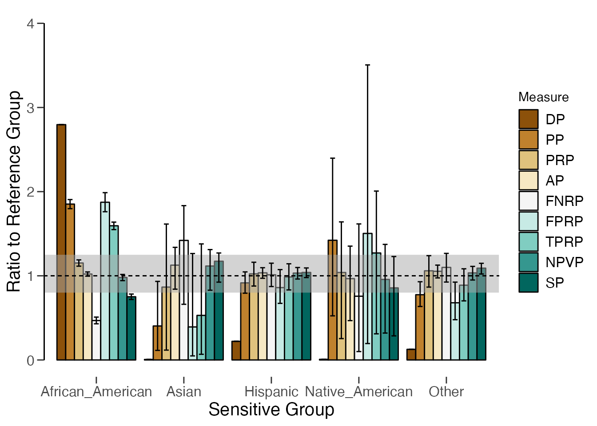

Introduction
Welcome to the ‘Algorithmic fairness’ vignette of the
jfa package. In this vignette you can find a detailed
example of how you can use the model_fairness() function
provided by the package.
Function: model_fairness()
The model_fairness() function provides a method to
assess fairness in algorithmic decision-making systems by computing
various model-agnostic metrics based on the observed and predicted
labels in a data set. Calculated metrics include demographic parity,
proportional parity, predictive rate parity, accuracy parity, false
negative rate parity, false positive rate parity, true positive rate
parity, negative predicted value parity, and specificity parity. Other
than computing these metrics, the function helps to decide whether
groups are treated fairly to a certain degree and within a certain
materiality threshold.
Note that, in an audit context, not all fairness measures are equally appropriate in all situations. The decision tree below aids with choosing which measure is best for the situation at hand (Büyük, 2023).

Example:
To illustrate how to use the model_fairness() function,
we will use a well-known data set called COMPAS. The COMPAS
(Correctional Offender Management Profiling for Alternative Sanctions)
software is is a case management and decision support tool used by some
U.S. courts to assess the likelihood of a defendant becoming a
recidivist (repeated offender).
The compas data is included in the package and contains
predictions of the COMPAS software for several cases. The data can be
loaded with data("compas") and contains for each defendant,
whether the defendant did commit a crime within two years after the
court case (TwoYrRecidivism), some personal characteristics
like gender and ethnicity, and whether the software predicted the
defendant to be a recidivist (Predicted).
## TwoYrRecidivism AgeAboveFoutryFive AgeBelowTwentyFive Gender Misdemeanor
## 4 no no no Male yes
## 5 yes no no Male no
## 7 no no no Female yes
## 11 no no no Male no
## 14 no no no Male yes
## 24 no no no Male yes
## Ethnicity Predicted
## 4 Other no
## 5 Caucasian yes
## 7 Caucasian no
## 11 African_American no
## 14 Hispanic no
## 24 Other noWe will investigate whether the algorithm is fair with respect to the sensitive attribute race. Considering the context, a positive prediction means that a defendant is classified as a reoffender, and a negative prediction means that a defendant is classified as a non-reoffender. The fairness metrics offer information on whether there are any disparities in the algorithm’s predictions across different ethnic groups. By calculating and reviewing these metrics, we can get an indication of whether the algorithm exhibits any discriminatory behavior towards specific ethnic groups. If substantial disparities exist, we may need to investigate further and potentially modify the algorithm to ensure fairness in its predictions.
data("compas")
x <- model_fairness(compas, "Ethnicity", "TwoYrRecidivism", "Predicted", reference = "Caucasian", positive = "yes")
summary(x)##
## Algorithmic Fairness Metrics Summary
##
## Reference group: Caucasian
##
## Confusion matrix:
## Predicted
## Actual no yes
## no 997 284
## yes 434 388
##
## Model performance:
## Caucasian African_American Asian Hispanic Native_American Other
## Support 2103 3175 31 509 11 343
## Accuracy 0.65858 0.67244 0.74194 0.68173 0.63636 0.69388
## Precision 0.57738 0.66525 0.5 0.5906 0.6 0.61176
## Recall 0.47202 0.75256 0.25 0.46561 0.6 0.41935
## F1 score 0.51941 0.70621 0.33333 0.52071 0.6 0.49761
##
## Fairness metrics (parity ratio):
## Caucasian African_American
## Demographic parity 672 (1) 1879 (2.7961)
## Proportional parity 0.31954 (1) 0.59181 (1.8521)
## Predictive rate parity 0.57738 (1) 0.66525 (1.1522)
## Accuracy parity 0.65858 (1) 0.67244 (1.021)
## False negative rate parity 0.52798 (1) 0.24744 (0.46866)
## False positive rate parity 0.2217 (1) 0.41546 (1.8739)
## True positive rate parity 0.47202 (1) 0.75256 (1.5943)
## Negative predicted value parity 0.69672 (1) 0.68287 (0.98013)
## Specificity parity 0.7783 (1) 0.58454 (0.75105)
## Outside tolerance region 6
## Asian Hispanic
## Demographic parity 4 (0.0059524) 149 (0.22173)
## Proportional parity 0.12903 (0.4038) 0.29273 (0.91609)
## Predictive rate parity 0.5 (0.86598) 0.5906 (1.0229)
## Accuracy parity 0.74194 (1.1266) 0.68173 (1.0351)
## False negative rate parity 0.75 (1.4205) 0.53439 (1.0121)
## False positive rate parity 0.086957 (0.39222) 0.19062 (0.85983)
## True positive rate parity 0.25 (0.52964) 0.46561 (0.98642)
## Negative predicted value parity 0.77778 (1.1163) 0.71944 (1.0326)
## Specificity parity 0.91304 (1.1731) 0.80937 (1.0399)
## Outside tolerance region 5 1
## Native_American Other
## Demographic parity 5 (0.0074405) 85 (0.12649)
## Proportional parity 0.45455 (1.4225) 0.24781 (0.77552)
## Predictive rate parity 0.6 (1.0392) 0.61176 (1.0596)
## Accuracy parity 0.63636 (0.96626) 0.69388 (1.0536)
## False negative rate parity 0.4 (0.7576) 0.58065 (1.0997)
## False positive rate parity 0.33333 (1.5035) 0.15068 (0.67967)
## True positive rate parity 0.6 (1.2711) 0.41935 (0.88843)
## Negative predicted value parity 0.66667 (0.95687) 0.72093 (1.0348)
## Specificity parity 0.66667 (0.85657) 0.84932 (1.0912)
## Outside tolerance region 5 3
plot(x)
Let’s interpret the fairness metrics for the African American, Asian, and Hispanic groups in comparison to the reference group (Caucasian).
- Demographic parity (Statistical parity): Compares the number of positive predictions (e.g., reoffenders) between each ethnic group and the reference group.
- African American: The ratio of positive predictions for African Americans compared to Caucasians is 2.7961, indicating that there are nearly three times more African Americans predicted as reoffenders than Caucasians.
- Asian: The ratio for Asians is very close to zero (0.0059524), indicating that there are many less Asians (4) that are predicted as reoffenders in these data than there are Caucasians.
- Hispanic: The ratio for Hispanics is 0.22173, meaning that there are about five times less Hispanics predicted as reoffenders than that there are Caucasians.
- Proportional parity (Disparate impact): Compares the positive prediction rates (e.g., true positive rate) of each ethnic group with the reference group.
- African American: The ratio of true positive rates (TPRs) for African Americans compared to Caucasians is 1.8521. This indicates that the TPR for African Americans is approximately 1.85 times higher than for Caucasians. Again, this suggests potential bias in the algorithm’s predictions against African Americans.
- Asian: The proportional parity ratio for Asians is 0.4038, indicating that their TPR is lower than for Caucasians. This suggests potential underestimation of reoffenders among Asians.
- Hispanic: The ratio for Hispanics is 0.91609, suggesting that their TPR is close to the reference group (Caucasians). This indicates relatively fair treatment of Hispanics in the algorithm’s predictions.
- Predictive rate parity (Equalized odds): Compares the overall positive prediction rates (e.g., reoffender prediction) of different ethnic groups with the reference group.
- African American: The predictive rate parity ratio for African Americans is 1.1522. This suggests that the overall positive prediction rate for African Americans is approximately 1.15 times higher than for Caucasians. This indicates potential favoritism towards African Americans in the overall positive predictions made by the algorithm.
- Asian: The ratio for Asians is 0.86598, indicating that their overall positive prediction rate is lower than for Caucasians. This suggests potential underestimation of reoffenders among Asians by the algorithm.
- Hispanic: The predictive rate parity ratio for Hispanics is 1.0229, suggesting their overall positive prediction rate is very close to that of the reference group (Caucasians). This indicates relatively fair treatment in the algorithm’s overall positive predictions.
- Accuracy parity: Compares the accuracy of each ethnic group’s predictions with the reference group.
- African American: The accuracy parity ratio for African Americans is 1.021, suggesting their accuracy is very similar to the reference group (Caucasians). This indicates fair treatment concerning overall accuracy.
- Asian: The accuracy parity ratio for Asians is 1.1266, suggesting their accuracy is slightly higher than for Caucasians, indicating potential favoritism in overall accuracy.
- Hispanic: The ratio for Hispanics is 1.0351, suggesting their accuracy is slightly higher than for Caucasians, indicating potential favoritism in overall accuracy.
- False negative rate parity (Treatment equality): Compares the false negative rates (e.g., for reoffenders) of each ethnic group with the reference group.
- African American: The ratio of false negative rates (FNRs) for African Americans compared to Caucasians is 0.46866. A value lower than 1 suggests that African Americans are less likely to be falsely classified as non-reoffenders, indicating potential bias against this group in this aspect.
- Asian: The ratio for Asians is 1.4205, indicating that they are more likely to be falsely classified as non-reoffenders compared to Caucasians, suggesting potential underestimation of reoffenders among Asians.
- Hispanic: The FNR parity ratio for Hispanics is 1.0121, indicating relatively similar rates as the reference group (Caucasians), suggesting fair treatment in this aspect.
- False positive rate parity: Compares the false positive rates (e.g., for non-reoffenders) of each ethnic group with the reference group.
- African American: The false positive rate parity ratio for African Americans is 1.8739. This indicates that African Americans are approximately 1.87 times more likely to be falsely predicted as reoffenders than Caucasians. This suggests potential bias in the algorithm’s false positive predictions in favor of African Americans.
- Asian: The ratio for Asians is 0.39222, indicating that they are less likely to be falsely predicted as reoffenders compared to Caucasians. This suggests potential fair treatment of Asians in false positive predictions.
- Hispanic: The false positive rate parity ratio for Hispanics is 0.85983, suggesting they are less likely to be falsely predicted as reoffenders compared to Caucasians. This indicates potential fair treatment of Hispanics in false positive predictions.
- True positive rate parity (Equal opportunity): Compares the true positive rates (e.g., for reoffenders) of each ethnic group with the reference group.
- African American: The true positive rate parity ratio for African Americans is 1.5943. This indicates that African Americans are approximately 1.59 times more likely to be correctly predicted as reoffenders than Caucasians. This suggests potential favoritism towards African Americans in true positive predictions made by the algorithm.
- Asian: The ratio for Asians is 0.52964, indicating that they are less likely to be correctly predicted as reoffenders compared to Caucasians. This suggests potential underestimation of reoffenders among Asians by the algorithm.
- Hispanic: The true positive rate parity ratio for Hispanics is 0.98642, suggesting their true positive rate is very close to that of the reference group (Caucasians). This indicates relatively fair treatment in the algorithm’s true positive predictions.
- Negative predicted value parity: Compares the negative predicted values (e.g., for non-reoffenders) of each ethnic group with the reference group.
- African American: The Negative predicted value (NPV) parity ratio for African Americans is 0.98013. A value close to 1 indicates that the NPV for African Americans is very similar to the reference group (Caucasians). This suggests fair treatment in predicting non-reoffenders among African Americans.
- Asian: The NPV parity ratio for Asians is 1.1163, indicating that their NPV is slightly higher than for Caucasians. This could suggest potential favoritism towards Asians in predicting non-reoffenders.
- Hispanic: The NPV parity ratio for Hispanics is 1.0326, suggesting that their NPV is slightly higher than for Caucasians. This indicates potential favoritism towards Hispanics in predicting non-reoffenders.
- Specificity parity (True negative rate parity): Compares the specificity (true negative rate) of each ethnic group with the reference group.
- African American: The specificity parity ratio for African Americans is 0.75105. A value lower than 1 indicates that the specificity for African Americans is lower than for Caucasians. This suggests potential bias in correctly identifying non-reoffenders among African Americans.
- Asian: The specificity parity ratio for Asians is 1.1731, indicating their specificity is slightly higher than for Caucasians. This could suggest potential favoritism in correctly identifying non-reoffenders among Asians.
- Hispanic: The specificity parity ratio for Hispanics is 1.0399, suggesting that their specificity is very close to the reference group (Caucasians). This indicates relatively fair treatment in correctly identifying non-reoffenders among Hispanics.
References
- Büyük, S. (2023). Automatic Fairness Criteria and Fair Model Selection for Critical ML Tasks, Master Thesis, Utrecht University. - View Online
- Pessach, D. & Shmueli, E. (2022). A review on fairness in machine learning. ACM Computing Surveys, 55(3), 1-44. - View Online